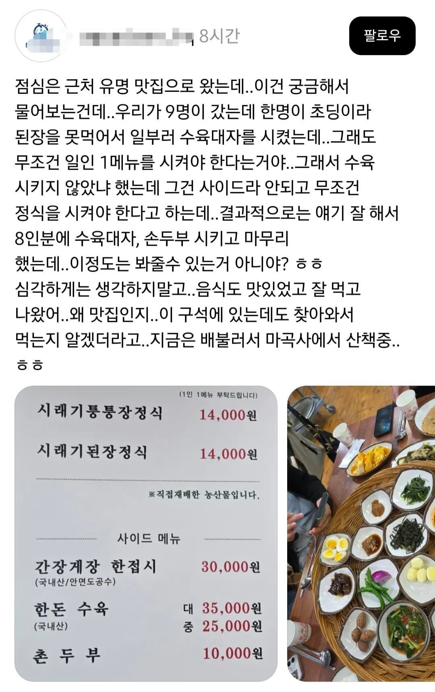
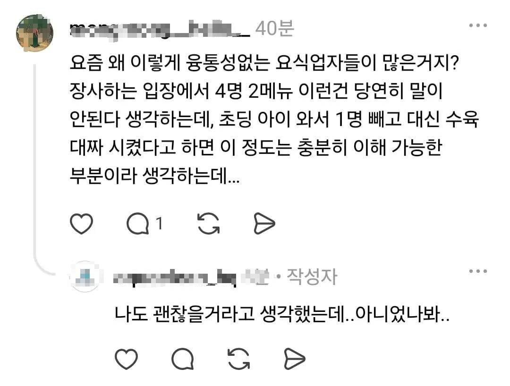
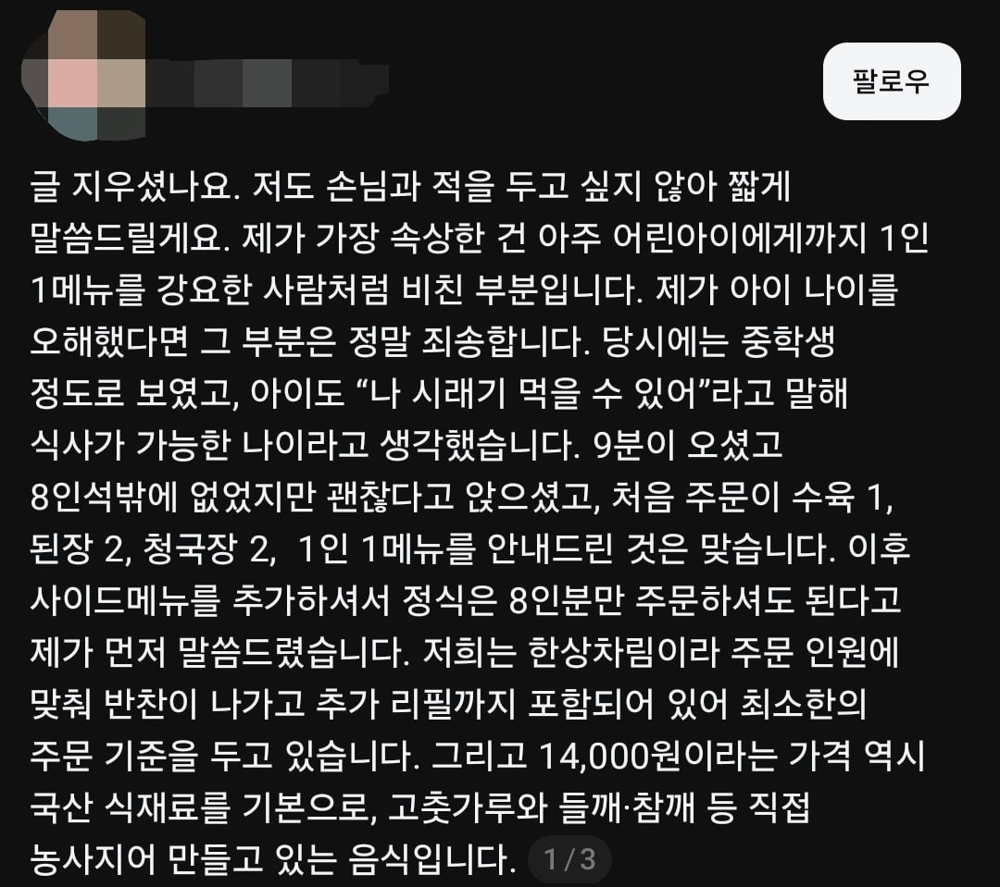
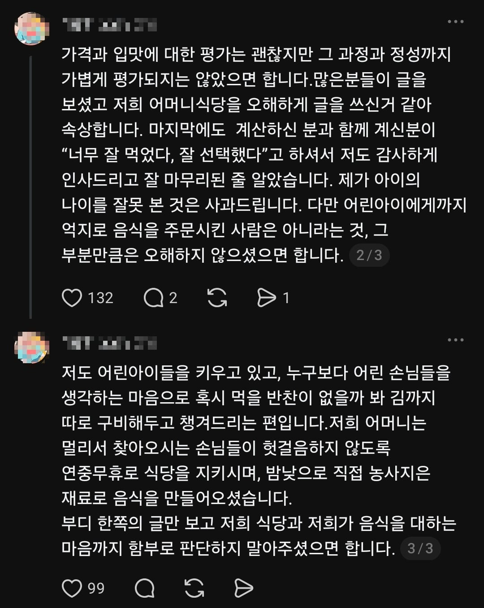

이 글만 봐선 아이가 어려서 정식 대신 수육 대짜를 시켰는데
식당 측에서 1인1메뉴 하라고 배짱부린듯 한 내용이다
아래는 이 글을 본 해당 식당 사장의 입장


어른 8명+중학생만한 초딩 1명 = 총 9명단체 가
정식 4인분과 수육 1개를 주문한 상황이었음 (반찬 무한리필)
본인들이 비합리적으로 주문한 내용은 쏙 빼고
아이한테도 얄짤없는 유도리 없는 식당이라는
내용을 뚝딱 만들어버림
댓글
수집 당시 댓글 32개
펨이꼬져 · 2 일 전
잔반 포장이있습니다.
Mongrip · 2 일 전
할만한데는 하는데 못하는 음싣도 많습니다. 피자나 그런 비슷하게 포장할수잇는건 하는데 먹다남은 파스타 짬뽕 국수 고기 등등등을 포장할순 없는일… 그리고 포장해와도 잘 안먹고 버리게되는일도 많아서 왠만하면 포장 잘 안하게됨
황두남 · 2 일 전
포장 가능한지 물어보고 포장해와
인사이드로 · 2 일 전
장사하기 힘들다 ㅋㅋ 미쳔새끼들이 많아서
희야ᅟᅠ · 2 일 전
ㅋㅋㅋㅋㅋㅋ 개진상이네 진짜 9명이 4인분은 어디가도 진상이야
개붕야호 · 2 일 전
저런 억까가 다있냐 ㅋㅋㅋㅋ
가시돋친맨 · 2 일 전
아들 있는데에서 저런짓을?
햄부기온앤온 · 2 일 전
9명이 8인분도 아니고 4인분을 시켰다고? 양심 터졌네 진짜 ㅋㅋㅋㅋ ㅁㅊ
umko · 2 일 전
ㅋㅋㅋㅋㅋㅋ 수육 대자 시켰다는 핑계로 정식 굳이 더 안시키고 공기밥 추가+반찬리필로 먹을 계획이었나보네 진상이다 진상
닉볼때마다케겔운동 · 2 일 전
돈없으면 밥먹지마라
이히힉 · 2 일 전
고소가능할텐데 고소 가즈아!
갑자내공 · 2 일 전
지가 불리한 건 쏙 빼버리죠? 기분 나빴으니 글은 싸야겠고 ㅋㅋㅋ
SPP · 2 일 전
이래서 일방적으로 난리치는 글만 보고 욕하면 안된다니까..
Jules · 2 일 전
본인이 4명이 와서 2메뉴 시키는 건 말이 안된다고 생각한다면서 9명이 가서 4개 시키고 자빠졌네 ㅋㅋㅋㅋㅋㅋㅋㅋㅋㅋㅋ
즐겁다콘땜에가입 · 2 일 전
대전에서 배관청소하는 자영업자네 본인도 ㅋㅋㅋ 시팔 진짜 징그럽다 징그러우ㅜ
땀똔 · 2 일 전
에휴 징그럽네
닭갈비닭 · 2 일 전
아니 불리한 말 뺀것도 아니고 자기는 8인분 시켰다고 거짓말을 하는데 이게 머시여
abcdefghijkl · 2 일 전
가게가 거짓말 한걸수도 있지 않나?
라망 · 2 일 전
보통 저정도면 가게는 상호가 까발려진 상황 일반적으로 손님은 잃을게 없고 가게는 잃을게 많지않을까? 이런 관점에서 보자면 가게가 거짓말할리는 없다고 보지
홓홓 · 2 일 전
자삭런 했다는데 그럼 결과 나온거 아닐까
DrMushroom · 2 일 전
거지새끼들이 별 똥존심만 있어서는
유리한 · 2 일 전
초딩은 된장을 못먹어?
테슬라300달러 · 2 일 전
ㅋㅋㅋㅋ9명이서 4개 시켰다는건 욕처먹을일인걸 아니까 8개로 구라친거네 ㅋㅋㅋ ㅂㅅ
악덕팬더 · 2 일 전
손님은 8인분 시켰다고 하고 가게는 4인분 시켰다고 하니까 캐삭빵 가자
아니그게아니지 · 2 일 전
난 그래서 리뷰 아래 박은거중에 아이라는 키워드가 들어가면 바로 반려시킴
연골어류 · 2 일 전
지금은 글삭했겠군...
걍둉 · 2 일 전
애도 초등학생인척 하라 했을듯
괴로로 · 2 일 전
돈없음 집에서 라면이나 처먹지
침착 · 2 일 전
한정식집 한번이라고 가본사람은 알텐데 저 수육 사이드는 진짜 사이드임 보통 1인당 정식은 기본이고 테이블당 고기반찬 사이드메뉴 하나씩 시키는게 정석이잖아
변기맨 · 2 일 전
애들 셋 (5 6 10) 데리고 와이프랑 외식 하러 가면 그래도 미안해서 최소 3인분+사이드 혹은 4인분 주문 하려고 하는데 오히려 너무 많다고 적게 시키라는 식당 사장님들이 더 많아 온라인에 올라오는 이상한 사례는 진짜 그대로 믿으면 안됨
니소그 · 1 일 전
지 맘대로 유도리 범위 정해놓고 진상 부리는 경우 꽤 있어서 저것도 유도리랍시고 진상부리다가 안 통하니까 겉으로는 납득한 척 하다가 음흉하게 글 올린 거구만 유도리 타령으로 시작하면 어째 다 그러네
배똘 · 1 일 전
9분..